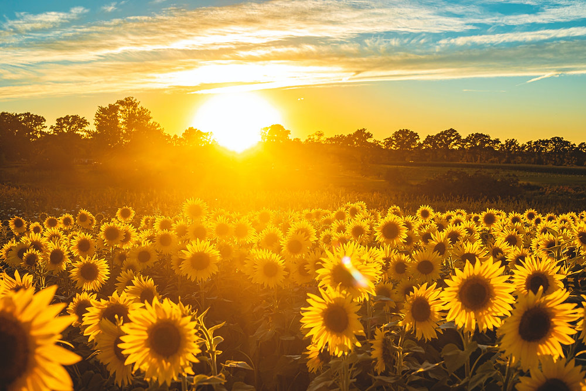

| ⋆˚✿˖°INICIO | ⋆˚✿˖°FLORES_DE_INVIERNO | ⋆˚✿˖°FLORES_DE_OTOÑO | ⋆˚✿˖°FLORES_DE_VERANO |
DALIA
La dalia florece con fuerza cuando muchas otras flores ya han dicho adiós. Es la flor de la elegancia silenciosa, de la dignidad que no necesita aplausos. Simboliza la fortaleza interior, la gracia bajo presión y la belleza que no teme al cambio. En otoño, la dalia nos invita a caminar con paso firme, a mantenernos fieles a nosotros mismos en tiempos de transformación..
ASTER
Pequeña y estrellada, el aster florece como un secreto compartido entre el cielo y la tierra. Su nombre significa “estrella”, y no es casualidad: brilla en los jardines de otoño como un mensaje de esperanza. Representa el amor paciente, los recuerdos que acarician el alma, y la sensibilidad que aún en el silencio, comunica ternura. El aster es la flor de los vínculos invisibles pero inquebrantables.
GIRASOL DE OTOÑO

Aunque el verano se va, algunos girasoles tardíos continúan buscando la luz. El girasol de otoño es símbolo de lealtad, gratitud y constancia. Aun cuando el sol se esconde antes, esta flor sigue elevando su rostro al cielo, recordándonos que la luz también se lleva por dentro. Es la flor de los optimistas discretos, de quienes saben que cada estación tiene su belleza.
ANÉMONA JAPONESA
Delicada como un suspiro, pero fuerte como una raíz profunda, la anémona japonesa florece con elegancia mientras el frío se instala. Representa la armonía en medio del cambio, la belleza efímera que debe ser apreciada sin prisa. Es la flor de la contemplación, de la serenidad y del alma que se adapta sin perder su esencia.